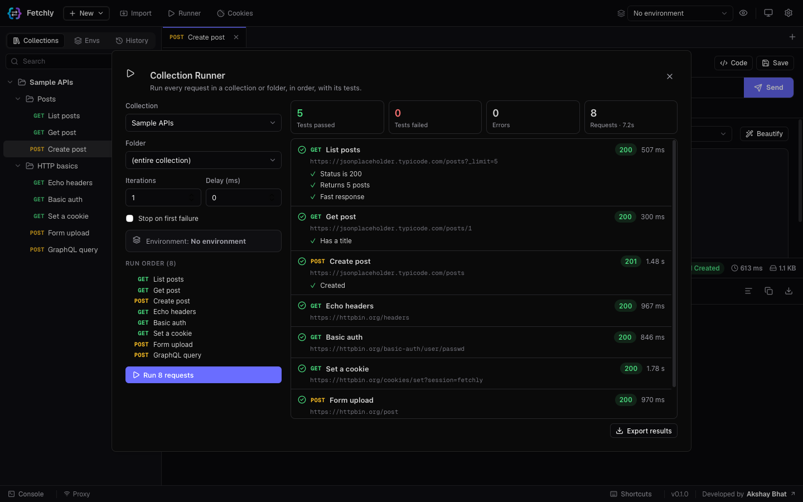
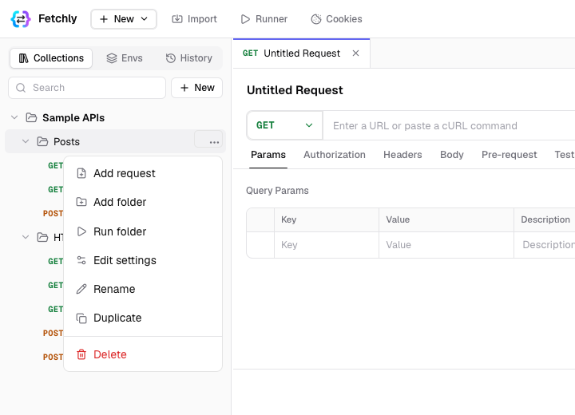

macOS
macOS 11+ · Apple Silicon & IntelOpen the .dmg and drag Fetchly to Applications. First launch: right-click → Open.
Fetchly is a fast, private, open-source API client. Build requests, test them and run whole collections — no account, no cloud, no limits. Your data never leaves your machine.
Fetchly covers the daily work of building, testing and organising API requests — in a native app that opens instantly.
Every common method, params that stay in sync with the URL, headers, auth and bodies. Responses come back pretty-printed and highlighted, with status, time and size at a glance.

Write pre-request and test scripts with a familiar pm API, then run a collection or folder and watch every request and assertion stream in live.

One shared cookie jar for every request — including cookies set during redirects. Browse them by domain, edit values and expiry, or clear them in a click.

Group requests into collections and nested folders. Drag to reorder, move into folders or across collections. Right-click for everything else.
{{variables}} — highlighted when undefined
Local, environment, collection and global scopes, plus dynamic values like {{$guid}} and {{$timestamp}}.
Pre-request and test scripts at every level, with snippets and a built-in reference. Sandboxed, so a bad loop can't freeze the app.
cURL, Python, JavaScript fetch, Node axios, Rust, Go, raw HTTP, HTTPie and PowerShell.
Bring collections (v2.0 / v2.1) and environments in — and take them back out any time.
Query and variables editors with highlighting, sent as a standard GraphQL request.
Every request you send, grouped by day. Reopen any of them in a tab.
Request and response details, script logs and errors in one place.
Follows your system theme, with an adjustable interface scale and resizable panes.
Run the same app in your browser with a tiny relay server — or a single Docker container.
Postman is a full API platform. Fetchly focuses on being an excellent, private, local API client — and it reads and writes Postman's files, so you can move work in either direction.
| Postman | ||
|---|---|---|
| Account required | No | Sign-in needed for most features |
| Where your data lives | Your machine, in one local file | Synced to Postman's cloud |
| Works fully offline | Yes | Limited |
| Source code | Open source (MIT) | Proprietary |
| Desktop technology | Native Rust + system webview | Electron (bundles Chromium) |
| Installer size | ~15 MB macOS · ~5 MB Windows | Much larger |
| Collection runner limits | None | Depends on plan |
| Self-hosted web version | Yes | Hosted by Postman |
| Requests, auth, bodies, environments, scripts, runner, cookies | Yes | Yes |
| Team workspaces, mock servers, monitors | Not yet | Yes |
| WebSocket, gRPC, MQTT | Not yet | Yes |
Postman is a trademark of Postman, Inc. Fetchly is an independent project and is not affiliated with or endorsed by Postman.
Open the .dmg and drag Fetchly to Applications. First launch: right-click → Open.
No admin rights needed. If SmartScreen appears: More info → Run anyway.
sudo apt install ./fetchly_*.deb, or extract the archive and run ./install.sh.
docker build -t fetchly .
docker run -p 8080:8080 fetchlyRuns the same app in your browser, with a small relay that handles CORS for you.
Export from Postman, click Import in Fetchly, done. Requests, folders, headers, bodies, auth, variables and environments come across. Your JavaScript test scripts are kept as comments, ready to port.
// Familiar pm API, sandboxed Rhai scripts
pm.test("Status is 200", || pm.response.to_have_status(200));
pm.test("Returns items", || {
let data = pm.response.json();
pm.expect(data.items).to_have_length(3);
});
// Chain requests
pm.environment.set("token", pm.response.json().token);Fetchly is MIT-licensed. The engine — HTTP, cookies, scripting, import/export — is a platform-independent Rust library shared by the desktop apps and the web build.
Yes. Fetchly is open source under the MIT license, with no paid tiers, accounts or usage limits.
In a single JSON file on your computer — for example ~/Library/Application Support/Fetchly/state.json on macOS. On the web it lives in your browser's local storage. Nothing is sent anywhere except the requests you choose to send.
The builds aren't code-signed yet. On macOS, right-click the app → Open. On Windows, choose More info → Run anyway. You only need to do this once.
Yes — Postman collections (v2.0 and v2.1), environments and cURL commands. You can also export back to Postman's format at any time.
Fetchly scripts use Rhai, a JavaScript-like language, with a familiar pm API. Imported JavaScript is kept as comments so nothing breaks; most pm.test / pm.expect checks port almost line for line.
It uses Microsoft Edge WebView2, which is built into Windows 11 and most Windows 10 PCs. The installer offers the download if it's missing.